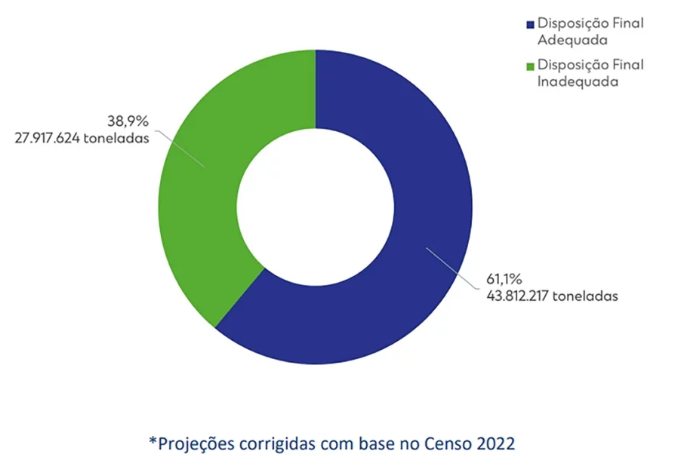
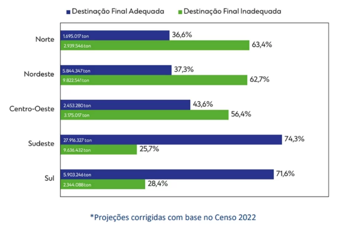
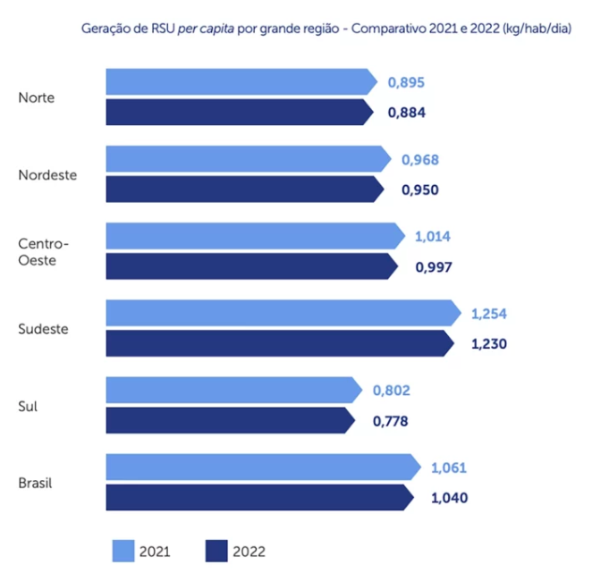
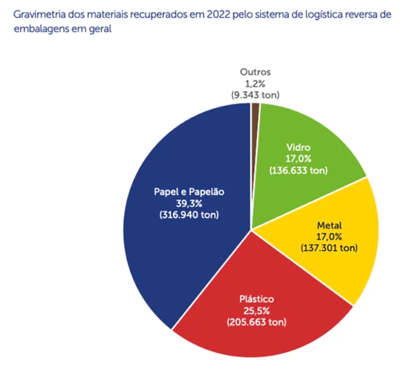
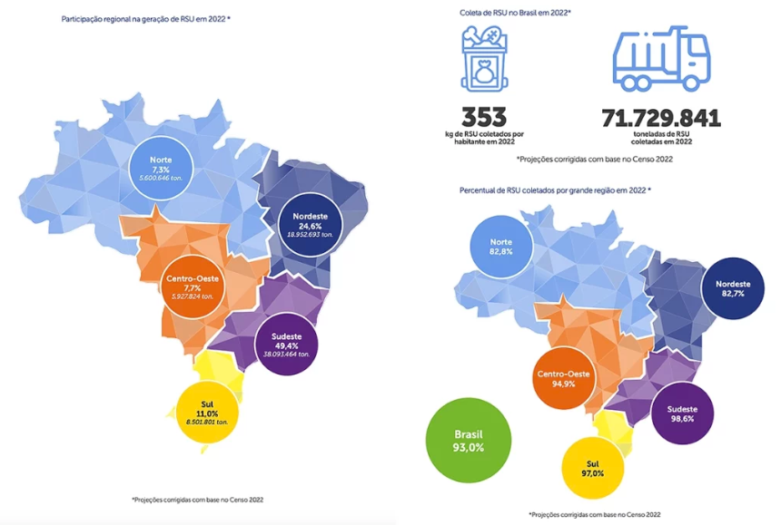
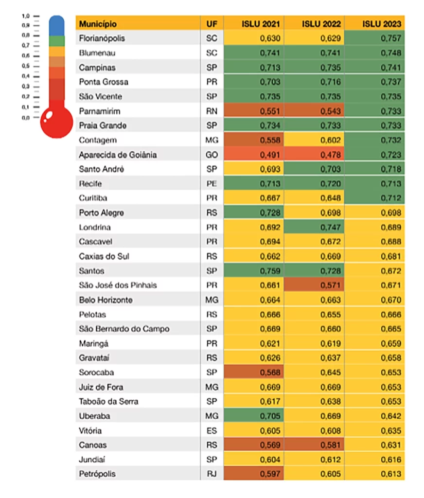

Brasil descarta 33 milhões de toneladas de lixo de forma irregular
O Brasil ainda está longe da universalização do manejo ambientalmente adequado dos resíduos sólidos produzidos pela população, conforme estabelecido pela Política Nacional dos Resíduos Sólidos-PNRS. O país também não vai atingir a meta de erradicação dos lixões, determinada pela legislação para 2024. É o que atesta o Panorama dos Resíduos Sólidos no Brasil 2023, lançado pela Associação Brasileira de Resíduos e Meio Ambiente (ABREMA).
De acordo com o estudo, aproximadamente 33,3 milhões de toneladas de resíduos sólidos urbanos tiveram destinação inadequada em 2022. Esse montante representa quase 40% de todo o lixo gerado no país – o equivalente a 11.362 piscinas olímpicas de lixo compactado ou 233 estádios do Maracanã lotados – que vão parar em lixões a céu aberto, valas, terrenos baldios e córregos urbanos, ameaçando a saúde pública e o meio ambiente.
Segundo o estudo, desse total, 27,9 milhões de toneladas foram enviadas para os mais de 3 mil lixões que ainda existem no país, apesar da prática ser considerada ilegal. Outras 5,3 milhões de toneladas de lixo são incorretamente descartadas pela população que vive em áreas não atendidas por nenhum tipo de serviço de coleta. O número representa 7% de todo lixo produzido no país.
“As áreas ambientalmente mais adequadas para o recebimento dos resíduos sólidos produzidos pela sociedade são os aterros sanitários, que são obras de engenharia com sistemas de impermeabilização de base, coleta e aproveitamento ou queima de biogás, drenagem, tratamento de chorume, além de contar com monitoramento ambiental e geotécnico permanente”, informa o presidente da ABREMA, Pedro Maranhão. “Lixões, valas, vazadouros e áreas similares não possuem essa proteção ambiental e são uma ameaça a para a saúde pública e ao meio ambiente”, completa.
Estagnação
De acordo com o Panorama, o Brasil não teve evolução significativa em relação à disposição final ambientalmente adequada de resíduos produzidos no país. O índice de itens descartados enviados para aterros sanitários passou de 60,5% em 2021 para 61,1% em 2022, o que representa 43,8 milhões de toneladas. No país, 39% do total de resíduos coletados em 2022 foi direcionado para locais irregulares e potencialmente danosos ao meio ambiente e para a saúde pública.
O melhor cenário está nas regiões Sul e Sudeste, com mais de 70% de destinação adequada. As duas regiões são as únicas do país com mais da metade dos resíduos sendo encaminhados para áreas ambientalmente adequadas. Nas regiões Norte e Nordeste, apenas 36,6% e 37,3% dos rejeitos são encaminhados para aterros. No Centro-Oeste, 43,6% do lixo tem manejo adequado.
O resultado é ainda pior em relação à coleta seletiva porta a porta, com índices baixos nos sistemas de gestão municipal de resíduos sólidos. Segundo dados do Diagnóstico Temático Manejo de Resíduos Sólidos Urbanos (SNIS 2021), a coleta seletiva porta a porta atende somente 14,7% da população brasileira. Mesmo a região Sul, que apresenta o melhor índice do país, apresenta cobertura de 31,9% da população. A região Nordeste apresenta a menor abrangência de coleta seletiva porta a porta, atendendo somente 1,9% da população
Geração nacional e per capita
O Panorama dos Resíduos Sólidos no Brasil 2023 apresenta a evolução da geração e manejo de resíduos sólidos no país ao longo do ano-base de 2022. No período, foram gerados no Brasil 77, 1 milhões de toneladas de resíduos sólidos urbanos. Esse montante corresponde a mais de 211 mil toneladas de resíduos gerados por dia, ou cerca de 380 kg por habitante no ano. Em média, cada brasileiro produz 1,04kg de resíduos todos os dias, número que representa uma redução de 2% em relação a 2021.
O volume total de lixo produzido no Brasil em 2022 é menor que as estimativas feitas para o ano em 2021, porém esse resultado não significa queda na produção de rejeitos. À época se previa uma geração de resíduos acima dos 82 milhões de toneladas para 2022. Essa redução se deve a uma alteração da base de cálculo a partir dos resultados da última edição do Censo, que apontou uma população de 203 milhões de habitantes no país, em vez dos 213 milhões de habitantes estimados pelo IBGE antes da contagem oficial.
Índice de Sustentabilidade da Limpeza Urbana
A ABREMA também lançou a nova edição 2023 do Índice de Sustentabilidade da Limpeza Urbana, ferramenta estatística criada para medir o grau de aderência dos municípios brasileiros às diretrizes e metas da PNRS. De acordo com a publicação, dos 3.947 municípios pesquisados, cerca de 43% continuam destinando o lixo incorretamente.
Depois de 13 anos da legislação em vigor, nenhuma cidade brasileira está na faixa de pontuação mais alta do ISLU, que significa plena aplicação da lei. Cerca de 25% dos lares brasileiros não têm serviço de coleta regular pelo menos uma vez por semana, o que mostra uma longa distância para a universalização prevista. Já o índice médio de reciclagem no Brasil não passa dos 3,5%, a maior parte concentrada nas regiões Sul e Sudeste.
A erradicação dos lixões em todo o Brasil é uma obrigação estabelecida pela PNRS. Pela lei, nenhuma cidade deveria possuir áreas de descarte a céu aberto até 2014. O prazo para cumprimento dessa meta foi estendido para 2024, mas em face aos resultados obtidos até o momento, não será cumprido.
“Os dados observados tanto pelo Panorama dos Resíduos Sólidos no Brasil, quanto pelo ISLU em 2023, mostram a necessidade de se avançar na luta pela gestão adequada dos resíduos no Brasil ou continuaremos imersos em graves, porém evitáveis problemas sociais, ambientais e de saúde pública. Essa evolução passa pelo uso de duas ferramentas já previstas em lei: a regionalização dos serviços e a cobrança de taxa ou tarifa específica para o devido custeio dos serviços” comenta Pedro Maranhão.
“A regionalização dos serviços permite o uso de estruturas comuns por diversos municípios, possibilitando ganhos de escala. Já o financiamento adequado possibilita a adoção de tecnologias adicionais ao longo de todo o processo de manejo, como reciclagem e aproveitamento energético, que contribuem para um modelo de economia mais sustentável”, completa o presidente da ABREMA.
Municípios mais bem pontuados
A análise de desempenho dos dez municípios mais bem pontuados entre aqueles acima acima de 250 mil habitantes no ISLU identifica, além do grau de aderência à PNRS, padrões diferenciados de gestão de resíduos sólidos que possam contribuir para o aperfeiçoamento da atividade em outros municípios.
São analisados como os recursos disponíveis são alocados para implementação da PNRS, com base em parâmetros comparativos como execução, direta ou indireta, quantidade média de resíduos por habitante/ano; cobrança específica/despesa total com o serviço, despesa per capita e quantidade de trabalhadores empregados na atividade, conforme informações do Sistema Nacional de Informações sobre Saneamento (SNIS).
Dos municípios avaliados, apenas Florianópolis (SC) apresentou um regime executado pela administração municipal direta, enquanto os demais apresentaram um regime executado pelas operadoras privadas contratadas pela administração local.
Entre os municípios com mais de 250 mil habitantes, Florianópolis tem a melhor pontuação no país no ISLU 2023. A capital catarinense teve crescimento substancial no último ano e passou de 0,629, em 2022, para 0,757 na edição atual. Ainda em Santa Catarina, Blumenau ocupa a segunda posição, com 0,748 de pontuação. Campinas é a cidade mais bem pontuada de São Paulo, com avaliação 0,741.